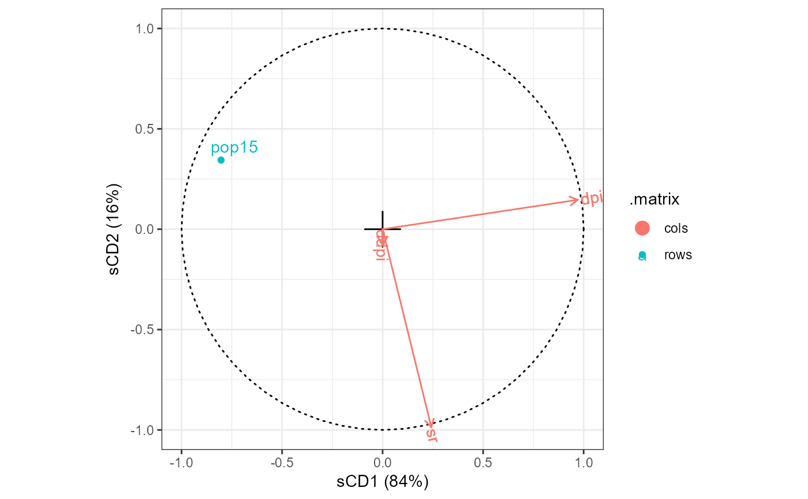

Functionality for penalized multivariate analysis ('CCA') objects
methods-pma-cca.RdThese methods extract data from, and attribute new data to, objects of class 'CCA' from the PMA package.
Usage
# S3 method for class 'CCA'
as_tbl_ord(x)
# S3 method for class 'CCA'
recover_coord(x)
# S3 method for class 'CCA'
recover_rows(x)
# S3 method for class 'CCA'
recover_cols(x)
# S3 method for class 'CCA'
recover_inertia(x)
# S3 method for class 'CCA'
recover_conference(x)
# S3 method for class 'CCA'
recover_aug_rows(x)
# S3 method for class 'CCA'
recover_aug_cols(x)
# S3 method for class 'CCA'
recover_aug_coord(x)Value
The recovery generics recover_*() return core model components, distribution of inertia,
supplementary elements, and intrinsic metadata; but they require methods for each model class to
tell them what these components are.
The generic as_tbl_ord() returns its input wrapped in the 'tbl_ord'
class. Its methods determine what model classes it is allowed to wrap. It
then provides 'tbl_ord' methods with access to the recoverers and hence to
the model components.
Note
The methods for class 'CCA' produce the biplot of Greenacre (1984), which are advised against by ter Braak (1990).
Penalized matrix decomposition
Witten, Tibshirani, and Hastie (2009) provide a theoretical basis and computational algorithm for penalized matrix decomposition that specializes to sparse PCA and to sparse CCA. Their R package PMA implements these specializations as well as one to sparse multiple CCA.
References
Witten DM, Tibshirani R, & Hastie T (2009) "A penalized matrix decomposition, with applications to sparse principal components and canonical correlation analysis". Biostatistics 10(3): 515–534. doi:10.1093/biostatistics/kxp008
Greenacre MJ (1984) Theory and applications of correspondence analysis. London: Academic Press, ISBN 0-12-299050-1. http://www.carme-n.org/?sec=books5
ter Braak CJF (1990) "Interpreting canonical correlation analysis through biplots of structure correlations and weights". Psychometrika 55(3), 519–531. doi:10.1007/BF02294765
See also
Other methods for singular value decomposition-based techniques:
methods-ade4,
methods-ca-ca,
methods-ca-mjca,
methods-candisc-cancor,
methods-lpca,
methods-nipals-empca,
methods-nipals-nipals,
methods-pma-spc
Other models from the PMA package:
methods-pma-spc
Examples
# data frame of life-cycle savings across countries
class(LifeCycleSavings)
#> [1] "data.frame"
head(LifeCycleSavings)
#> sr pop15 pop75 dpi ddpi
#> Australia 11.43 29.35 2.87 2329.68 2.87
#> Austria 12.07 23.32 4.41 1507.99 3.93
#> Belgium 13.17 23.80 4.43 2108.47 3.82
#> Bolivia 5.75 41.89 1.67 189.13 0.22
#> Brazil 12.88 42.19 0.83 728.47 4.56
#> Canada 8.79 31.72 2.85 2982.88 2.43
if (require(PMA)) {# {PMA}
# canonical correlation analysis of age distributions and financial factors
savings_cca <- PMA::CCA(
LifeCycleSavings[, c(2L, 3L)],
LifeCycleSavings[, c(1L, 4L, 5L)],
K = 2L, penaltyx = .7, penaltyz = .7,
xnames = names(LifeCycleSavings)[c(2L, 3L)],
znames = names(LifeCycleSavings)[c(1L, 4L, 5L)],
# prevent errors
typex = "standard", typez = "standard"
)
# wrap as a 'tbl_ord' object
(savings_cca <- as_tbl_ord(savings_cca))
# recover canonical variates
get_rows(savings_cca)
get_cols(savings_cca)
# augment canonical variates with variable names
(savings_cca <- augment_ord(savings_cca))
# column-standard biplot of non-zero canonical variates
nz_rows <- which(apply(recover_rows(savings_cca) != 0, 1L, any))
nz_cols <- which(apply(recover_cols(savings_cca) != 0, 1L, any))
savings_cca %>%
confer_inertia("rows") %>%
ggbiplot(aes(label = name, color = .matrix)) +
theme_bw() +
geom_origin() +
geom_unit_circle(linetype = "dotted") +
geom_cols_vector(subset = nz_cols) +
geom_cols_text_radiate(subset = nz_cols) +
geom_rows_point(subset = nz_rows) +
geom_rows_text_repel(subset = nz_rows) +
expand_limits(x = c(-1, 1), y = c(-1, 1))
}# {PMA}
#> Loading required package: PMA
#> Warning: package 'PMA' was built under R version 4.3.3
#> 12
#> 12
#> `subset` will be applied after data are restricted to active elements.
#> `subset` will be applied after data are restricted to active elements.
#> `subset` will be applied after data are restricted to active elements.
#> `subset` will be applied after data are restricted to active elements.
#> Warning: `GeomTextRadiate` is deprecated; use `GeomVector` instead.
